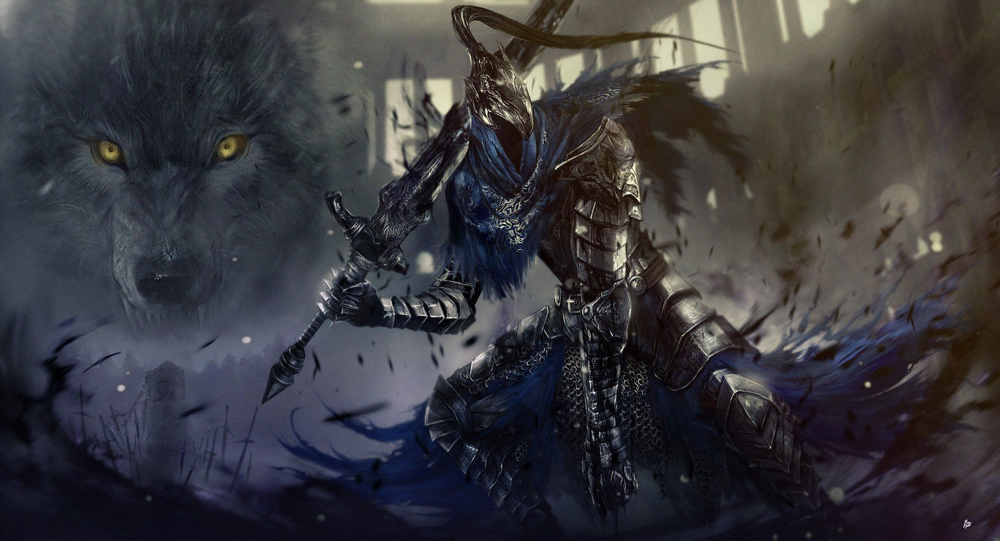
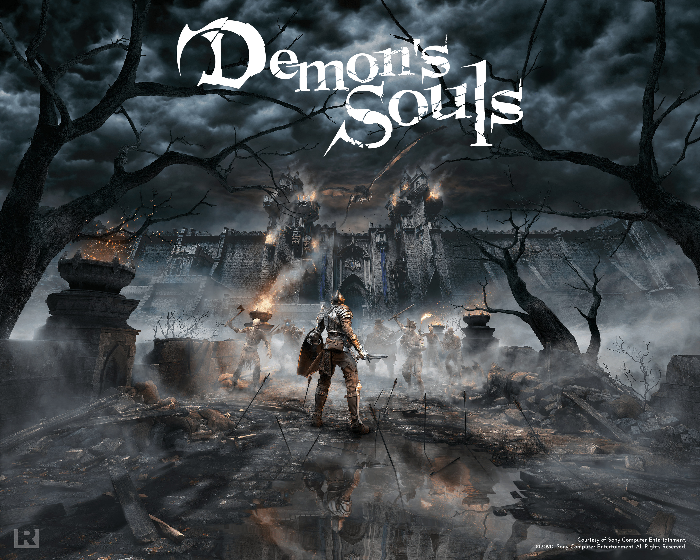

'Souls-like' er tölvuleikja 'Genre' sem hefur valdið gífurlegum vinsældum um allan heim.
Nafnið kemur upprunarlega frá 'The Souls-series' tölvuleikja seríuni frá FromSoftware í Japani.
Souls Serían frá From-Software eiga það sameiginlegt að vera mjög erfiðir 'Action Role-Playing Games' stílað
í kringum 'Boss-Fights' að alskonar stærðum og gerðum. Þessir 'Boss-ar' eru yfirleit mikið stærri og
sterkari en karakter spilandans svo að ef maður misreyknar sig eða gerir einhver mistök fær maður að finna fyrir þvi.
Bossar hafa mikið hærra 'damage' en þú og geta stundum drepið þig í einu skoti.
Leikur snýst þó um að læra á óvinin.
Spilendur læra hvernig skrímslin hegðar sér og gerir sínar árásir.
hver óvinur hefur eitthvernskonar veikleika sem er hægt að nota sér til stuðnings.
Þér er ættlað að 'tapa', en læra af mistökum.
þetta 'concept' að læra á óvininn og hvernig þeir hegða sér hefur að sjálfsögðu verið til síðan í uppruna tölvuleikja.
En það að tölvuleikurinn er sérstaklega og ýtarlega hannaður þannig að Gervigreind óvins þíns eða á ensku 'Artificial intelligence' AI
sé með styrkleika, veikleika, mismunandi brögð og árásir sem spilendur geta lært að forðast.
Þá myndast þessi þörf á að læra á hvern óvin ef sá hinn sami leikur er síðan virkilega erfiður.
Það eru engar erfiðleika stillingar í Souls-Seríuni að því leiti að grunn erfiðleika stilling leiksins er 'Hard'
Og það er ekkert hægt að komast frammhjá því.

Fleyri tölvuleikja 'Genres' sem eiga sameiginlega eiginleika og það ofangreynda:
Metroidvania
og
Rogue-like
Hinsvegar er þetta ekki það sem gefur leikjunum 'Souls-like' sub-genre nafnið.
Það sem gerir 'Souls-like' SOULS-like kemur upprunarlega frá fyrsta leik seríunar: 'Demon's Souls'
Það sem From-Software breyttu við grunn 'Action-RPG' 'Genre-að' er að gjaldmiðillinn sem er notaður til að uppfæra og
bæta Karakter spilandans er tapanlegur. Ef spilandi deyr í leiknum missir hann allan þann gjaldmiðil sem hann hefur safnað frá
óvinum sem hann hafði fyrr sigrað.
í 'Souls' Seríunum er sá gjaldmiðill einfaldlega kallaður 'Souls' eða sálir.
Þegar spilendur sigrar óvini gefa þau frá sér sálir sem spilendur geta safnað og notað við að uppfæra sinn Karakter.
Þessi stíll ýtir undir að nota það sem þér er gefið, ekki lengur ertu að hamstra saman öllum verðmætum sem fundið er bíðandi
eftir fullkomna tækifærinu. sem oft er ekki víst að það komi upp.
Ef þú ert mikill Roleplaying-game RPG aðdáandi hefur þú líklegast verið var við það að hamstra eða 'hoard-a' vermætum hlutum
þar til þú einfaldlega klárar leikinn og fékkst aldrei tækifæri á að nota allt sem þú ætlaðir þér.
Í Souls seríuni er mikilvægt að nota allt sem þú finnur og þér er gefið eins mikið og þú mögulega getur ef þú ætlar
að sigrað þá óvini sem standa fyrir þér.
Það er alltaf möguleiki á að missa þann gjaldmiðil sem ég nefni síðar sem er mun mikilvægari en eitthvað eins
og t.d. 'Strength-Potion'.

Fyrsti leikur í Seríuni er 'Demon's Souls' sett í 'Boletaria'. Boletaria er spillt ríki neytt af dimmri veru kölluð 'The Old One'.
Spilendur leika hetju senta til Boletaria til að drepa fallna konungin 'King Allant XII' sem varð að djöfli eftir sáttmál við The Old One.
King Allant metur 'The Old One' gjöf guðs til að hreinsa mankyns spillingu frá heiminum. Spilendur ferðast um 5 öðruvísi heima gegnum miðstöð kölluð 'The Nexus'.
Souls-Serían er oft skilgreint sem tiltölulega 'Dark' Fantasíu þema.
Og listastíllinn er svokallaður 'Gothic' miðaldrar rómantík.
Erfiðleika stig leiksins er meint til að kalla fram klassík í gömlum tölvuleikjum. Spilendum er gefið sú áskorun og afrek að reyna við leikinn.
Fyrstu viðbrögð leiksins voru séð sem neikvæð, en þó leikurinn mætti miðlungs dómum og sölu í japan, hafði hann gýfurlegan
árangur í vestri. Leikurinn var virtur sem erfiður og ávanabindandi. Kjölfar þess vann leikurinn mörg verlaun og árangurinn
kveikti í byrjun seríunar 'Dark Souls' árið 2011.
Leikstjóri Souls-Seríunar og höfundur af 'The Souls-Like-Genre' er Hidetaka Miyzaki